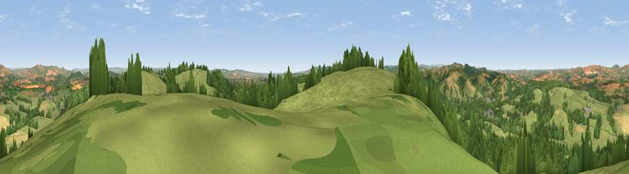

Viewpoint near Cowley
#7913 in England · top 11% of its area beats it · near CowleyWhere it is
The exact computed spot (SX 92625 95750). Click the marker for map links.
The view, rendered

A 360° render of this exact spot computed from the terrain model, tree cover and land cover — summer colours, afternoon light, calibrated against photographs of famous viewpoints. Real trees, hedges and buildings will differ in detail.
The panorama
Grey silhouette: terrain skyline in each direction (720 bearings, Earth curvature and refraction included). Dashed green: skyline with trees (+15 m) and buildings (+8 m) as obstacles. Blue strip: how far the ground is visible on each bearing.
Where the view opens
Wedge length = distance to the farthest visible ground on that bearing (vegetation-aware). Rings at 10, 25 and 50 km.
What fills the view
56% grassland · 27% woodland · 14% cropland · 2% built-up ·
Angular shares of the visible panorama (visual magnitude), not map area. Landscape diversity 0.47 (0–1 Shannon).
Key numbers
More beautiful places nearby
The staircase of upgrades: each row has a higher view potential than everything closer. Driving times are estimates from straight-line distance, calibrated against real road routing — check an actual route before setting out.
| Place | Direction | Drive | Score |
|---|---|---|---|
| Viewpoint near Cowley | SSW · 0 km | ~2 min | 69.8 |
| Viewpoint near Whitestone | W · 5 km | ~11 min | 73.9 |
| Viewpoint near Whitestone | W · 6 km | ~13 min | 79.8 |
| Viewpoint near Kenn | S · 12 km | ~22 min | 80.0 |
| Viewpoint near Kenton | S · 14 km | ~26 min | 80.7 |
| Viewpoint near Kenton | S · 15 km | ~27 min | 82.9 |
| High Peak | ESE · 20 km | ~34 min | 85.3 |
| Viewpoint near Luxborough | N · 45 km | ~65 min | 85.5 |
50.75139, -3.52346 · source: screening · position refined by local search. Computed location — check access rights before visiting.